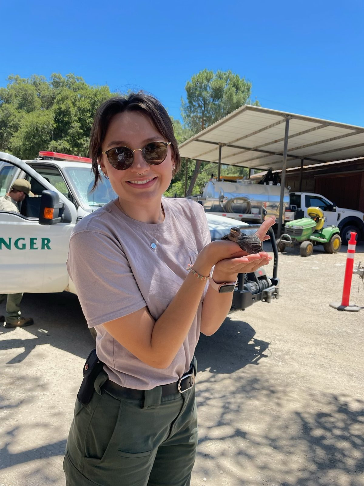

Hi, I'm Brooke.
I'm an environmental scientist based on California's Central Coast.

Where I've worked
In the field
-

Surface water sampling
Valley Water recharge ponds
Sampling the ponds that refill Santa Clara County’s aquifers.
-

PFAS soil-core logging
Valley Water
Describing soil cores so labs can trace “forever chemicals.”
-

Anderson Dam retrofit
Valley Water
Inside the new outlet tunnel of Santa Clara County’s largest reservoir.
-

Prescribed burn
Santa Clara County Parks
Helping CAL FIRE use fire to keep grasslands healthy.
-

Aquatic invasive species program
Cachuma Lake, Santa Barbara County Parks
Keeping quagga and zebra mussels out of the lake.
-

Permaculture volunteering
Mesa Harmony Garden, Santa Barbara
Where my permaculture training took root.
Let's work together.
I'm looking for a full-time position doing quantitative environmental science and spatial analysis on the Central Coast. Let’s make science accessible to the communities who depend on it.
- Emailbrooke.murphy0207@gmail.com
- LinkedInin/brooke-murphy0207
- GitHubBam0207
- Based inCalifornia's Central Coast